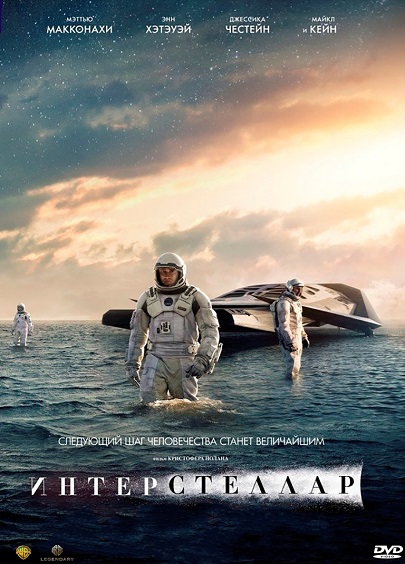

Интерстеллар


| Год |
2014 |
| Страна |
США |
| Жанр |
научная фантастика, приключения |
| Режиссер |
Кристофер Нолан |
Наше время на Земле подошло к концу, команда исследователей берет на себя самую важную миссию в
истории человечества; путешествуя за пределами нашей галактики, чтобы узнать есть ли у человечества
будущее среди звезд.
Выживший
| Год |
2015 |
| Страна |
США |
| Жанр |
вестерн, боевик |
| Режиссер |
Алехандро Гонсалес Иньярриту |
Охотник Хью Гласс серьезно ранен на неизведанных просторах американского Дикого Запада.
Товарищ Хью по отряду покорителей новых земель Джон Фицжеральд предательски оставляет
его умирать в одиночестве. Теперь у Гласса осталось только одно оружие — его сила воли.
Он готов бросить вызов первобытной природе, суровой зиме и враждебным племенам индейцев,
только чтобы выжить и отомстить Фицжеральду.
12 лет рабства
| Год |
2013 |
| Страна |
США |
| Жанр |
Драма, история |
| Режиссер |
Стив Маккуин |
Соломон Нортап был женатым и образованным мужчиной, который жил и работал в Нью-Йорке,
когда два человека однажды предложили ему привлекательную работу в Вашингтоне.
По прибытии он был похищен, стал рабом и влачил жалкую жизнь, переходя от одного хозяина к другому.